| 프로젝트명 | 인테리어 견적·시공관리 업무 플랫폼 |
| 문서명 | 화면 설계서 (Screen Design Specification) |
| 작성자 | 정예지 |
| 작성일자 | 2026-08-19 |
| 최종수정일 | 2026-08-19 |
| 문서 버전 | v1.0 |
| 연계 문서 | 요구사항 정의서 v1.1 (2026-08-18) |
| 관련 과정 | SKALA 웹 서비스 개발 Mini Project |
| 구현 소스 | Next.js 그레이스케일 와이어프레임 프로토타입 (전체 20화면 통합 리포지토리) |
| 항목 | 내용 |
|---|---|
| 프로젝트명 | 인테리어 견적·시공관리 업무 플랫폼 (중립형 B2B2C 업무 플랫폼) |
| 문서명 | 화면 설계서 (Screen Design Specification, 와이어프레임 + 인터랙션 정의) |
| 작성자 / 작성일 / 최종수정일 / 버전 | 정예지 / 2026-08-19 / 2026-08-19 / v1.0 |
| 연계 문서 | 요구사항 정의서 v1.1 (2026-08-18, 정예지) — 요구사항ID(REQ-*)·기능ID(FUNC-*)·화면ID(SCR-*) 체계를 그대로 상속 |
| 구현 소스 / 실행 방법 | Next.js 16 + React 19 + Tailwind v4 (shadcn 그레이스케일 테마). npm install && npm run dev 후 http://localhost:3000 에서 전체 20화면 확인 가능 |
| 범위 | 요구사항 정의서 4장에 명시된 관련 화면ID(SCR-*) 전체 20개 (부록 B의 6장 카테고리 커버리지 표와 1:1 대응) |
SCR-{대분류코드}-{일련번호} 형식을 사용하며, 요구사항 정의서의 "관련 화면 ID" 컬럼과 1:1로 매핑된다 (추적성 체계는 부록 6.2 참조).본 화면 설계서 자체의 버전 이력이다. 요구사항 정의서의 요구사항 단위 변경이력(제외/보류 포함)은 부록 6.4에서 별도로 추적한다.
| 버전 | 개정일 | 대상 범위 | 변경 내용 | 작성/검토자 |
|---|---|---|---|---|
| v1.0 | 2026-08-19 | 전체 (SCR-AUTH-001 ~ SCR-EXT-001, 20개 화면) | 요구사항 정의서 v1.1을 기준으로 화면 설계서 최초 작성. 실제 구동 중인 Next.js 그레이스케일 와이어프레임 프로토타입을 헤드리스 브라우저로 렌더링·캡처하여 전 화면 데스크톱/모바일 스크린샷을 첨부하고, 화면별 디스크립션(초기상태/인터랙션·로직/예외처리/이동화면/매핑 요구사항ID)을 신규 작성함. 대시보드 카테고리는 요구사항 정의서 v1.1 변경사항(SCR-DASH-001 업체용 / SCR-DASH-002 고객용 분리)을 그대로 반영. | 정예지 |
서비스명: 인테리어 회사를 위한 중립형 B2B2C 업무 플랫폼
목적: 인테리어 업체가 고객관리부터 견적, 계약, 시공관리, 결제, 고객 알림까지 필요한 업무 기능을 선택하여 사용하고, 고객은 업체가 공유한 프로젝트에 참여해 공사 진행 정보를 확인할 수 있는 중립형 업무 플랫폼.
메뉴 경로(depth)는 역할별로 다음과 같이 구성된다 — 메인 > 로그인(SCR-AUTH-003) 진입 후 역할에 따라 업체관리자 → 대시보드(SCR-DASH-001) / 현장담당자 → 공정관리(SCR-PROC-001) / 고객 → 마이페이지(SCR-DASH-002) / 플랫폼관리자 → 업체승인관리(SCR-COMP-001)로 자동 분기한다.
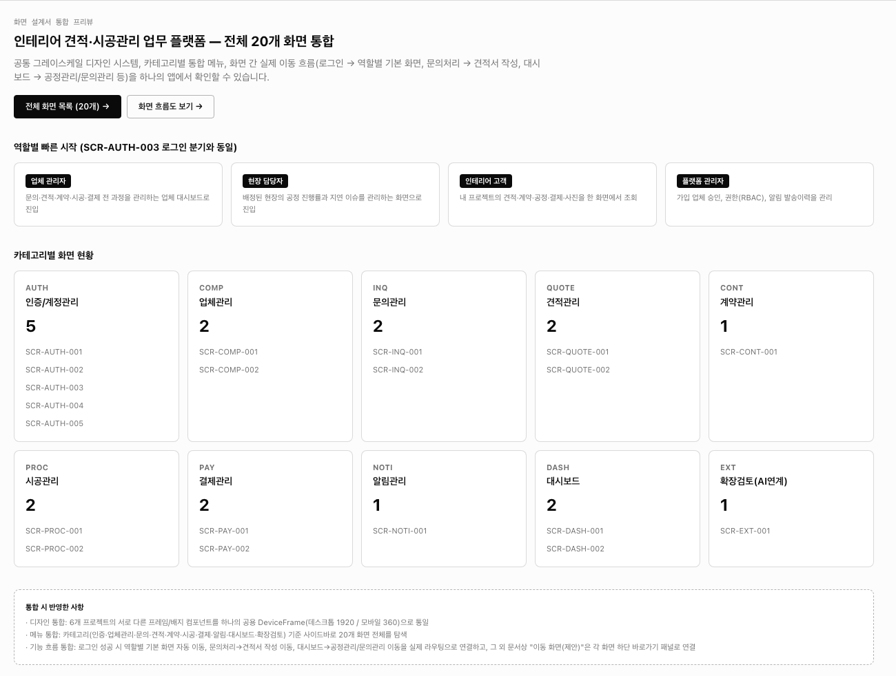
굵게 표시된 연결은 실제 라우팅으로 동작하는 흐름이며, 그 외 연결은 각 화면 하단 "관련 화면 바로가기" 패널을 통해 이동 가능한 이동 화면(제안)이다. 실제 라우팅 목록:
| From | To | 트리거 |
|---|---|---|
| SCR-AUTH-003 로그인 | SCR-DASH-001 업체 대시보드 | 업체 관리자 계정으로 로그인 성공 |
| SCR-AUTH-003 로그인 | SCR-PROC-001 공정 관리 | 현장 담당자 계정으로 로그인 성공 |
| SCR-AUTH-003 로그인 | SCR-DASH-002 고객 마이페이지 | 고객 계정으로 로그인 성공 |
| SCR-AUTH-003 로그인 | SCR-COMP-001 업체 승인관리 | 플랫폼 관리자 계정으로 로그인 성공 |
| SCR-INQ-002 문의 처리 관리 | SCR-QUOTE-001 견적서 작성 | "견적서 작성하기" 버튼 선택 |
| SCR-DASH-001 업체 대시보드 | SCR-PROC-001 공정 관리 | 프로젝트 리스트 행 클릭 |
| SCR-DASH-001 업체 대시보드 | SCR-INQ-002 문의 처리 관리 | 빈 상태의 "문의 확인하러 가기" 버튼 |
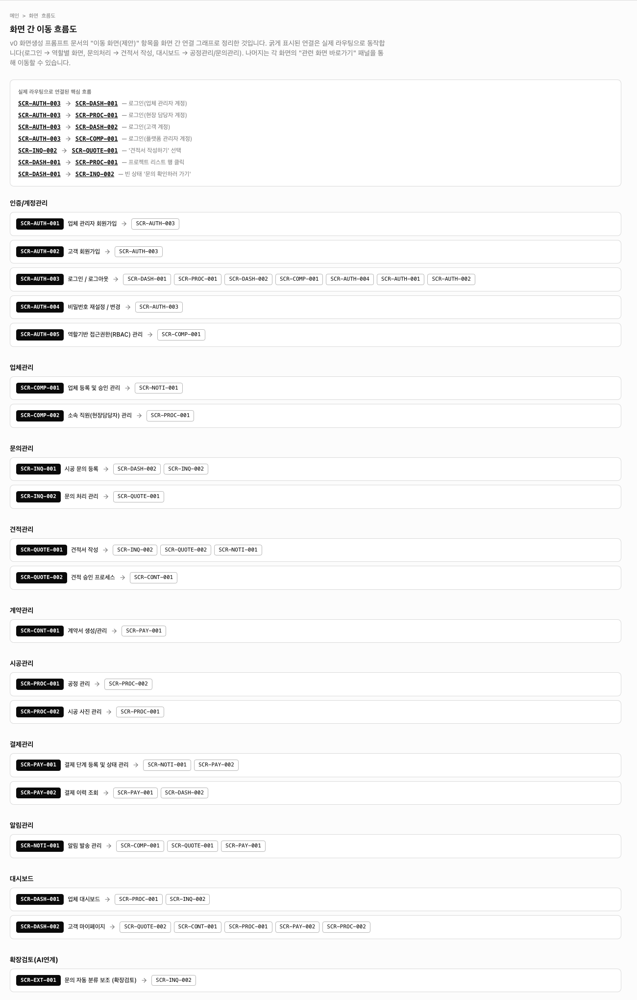
개별 화면 설계서에서 반복 기술하지 않고, 전 화면에 공통으로 적용되는 디자인·인터랙션·데이터·예외처리 규칙을 정의한다. 5장의 각 화면은 아래 공통 정책을 전제로 화면별 차이점만 기술한다.
app/globals.css(그레이스케일 shadcn 테마)와 공용 components/ui/button.tsx를 사용해 버튼·타이포·여백 톤을 통일한다.components/frame/device-preview.tsx). 콘텐츠가 프레임 높이를 초과하는 경우 프레임 내부 스크롤(overflow-y auto)로 처리하며, 본 문서의 캡처 이미지는 버튼 가시성 확보를 위해 프레임을 콘텐츠 높이에 맞춰 임시로 확장 렌더링한 것이다(4.2 참조).components/frame/screen-page-chrome.tsx).overflow-hidden → overflow-y-auto로 수정하였다 (5장 해당 화면 각주 참조).| 역할 | 로그인 성공 시 기본 진입 화면 | 비고 |
|---|---|---|
| 비로그인(guest) | — | 회원가입(SCR-AUTH-001/002)·로그인(SCR-AUTH-003)만 접근 가능 |
| 업체 관리자 | SCR-DASH-001 업체 대시보드 | 문의·견적·계약·시공·결제·직원관리 전 메뉴 접근 |
| 현장 담당자 | SCR-PROC-001 공정 관리 | 담당 프로젝트의 공정·사진 관리 범위로 제한 |
| 인테리어 고객 | SCR-DASH-002 고객 마이페이지 | 본인 프로젝트의 견적·계약·공정·결제·사진 조회로 제한 |
| 플랫폼 관리자 | SCR-COMP-001 업체 승인관리 | 업체 승인, RBAC 설정, 알림 발송이력 등 플랫폼 운영 메뉴 |
company_id 기준 논리적으로 격리한다(REQ-NFR-003, 멀티테넌시) — 타 업체의 프로젝트/문의/견적 데이터는 어떤 역할로도 조회되지 않아야 한다.*를 표기하고, 필수 항목이 모두 유효하게 입력되기 전까지 제출성 버튼(가입하기/발송/저장 등)은 비활성 상태를 유지한다.SCR-{대분류}-{일련번호})와 요구사항ID(REQ-{대분류}-{일련번호})는 항상 1:1 이상으로 교차 참조되며, 5장 각 화면의 "매핑 요구사항ID" 컬럼과 요구사항 정의서 4장의 "관련 화면 ID" 컬럼이 서로의 역참조가 된다 (추적성 매트릭스는 부록 6.2).전체 20개 화면을 요구사항 정의서 4장의 카테고리 순서(인증/계정관리 → 업체관리 → 고객문의관리 → 견적관리 → 계약관리 → 시공관리 → 결제관리 → 알림관리 → 대시보드 → 확장검토)대로 기술한다. 각 화면은 기본정보 → 초기 상태 → 와이어프레임(데스크톱/모바일 스크린샷) → 디스크립션(Happy Path/Edge Case 구분) → 예외 처리 및 정책 → 관련 화면 순서로 구성된다.
메뉴 경로: 메인 > 회원가입 > 업체 — 사업자정보(상호명·사업자등록번호·연락처) 입력 후 이메일 인증, 인증 완료 시 플랫폼 관리자 승인대기 상태로 전환되는 화면
disabled)로 시작하며, 상호명·사업자등록번호(10자리)·연락처(10자리 이상)·이메일 형식·비밀번호 일치가 모두 충족될 때만 검정 활성 버튼으로 전환된다.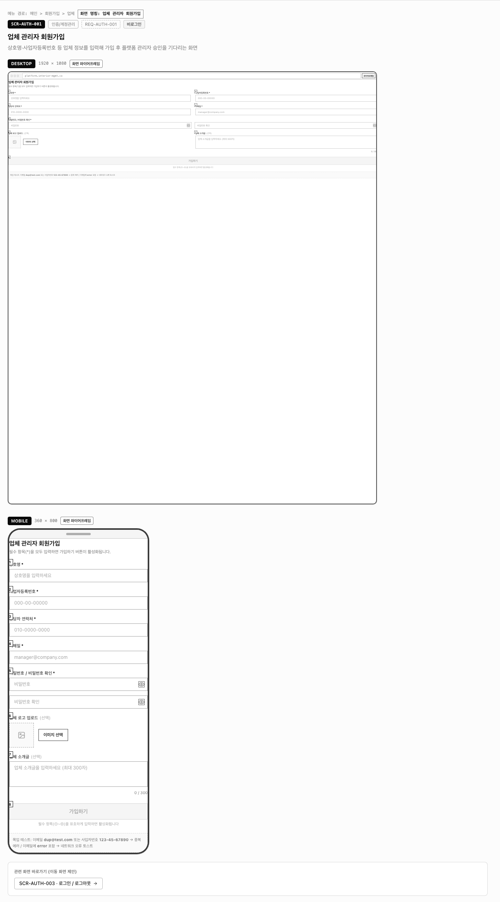
| NO | 구분 | UI 요소명 | 인터랙션 및 로직 정의 | 이동 화면 / 비고 | 매핑 요구사항ID |
|---|---|---|---|---|---|
| ① | Happy Path | 상호명 입력 | 필수 텍스트 필드(placeholder "상호명을 입력하세요"). 공란이면 가입하기 비활성 조건에 포함. | - | FUNC-AUTH-001-01 |
| ② | Happy Path | 사업자등록번호 입력 | 숫자만 입력받아 000-00-00000 형식으로 자동 하이픈 포맷팅(최대 10자리). 10자리 완성 시 유효로 판정. | - | FUNC-AUTH-001-01 |
| ②' | Edge Case | 사업자등록번호 검증 | 입력 후 포커스 아웃(blur) 시 10자리 미만이면 "사업자등록번호는 10자리 숫자여야 합니다 (000-00-00000)" 인라인 오류 노출(요구사항 "사업자번호 형식 검증" 반영). 제출 시 값이 123-45-67890(목업 중복값)이면 "이미 등록된 정보입니다" 오류로 폼으로 되돌아감. | - | FUNC-AUTH-001-01 |
| ③ | Happy Path | 담당자 연락처 입력 | 010-0000-0000 형식으로 자동 하이픈 포맷팅. | - | FUNC-AUTH-001-01 |
| ④ | Happy Path | 이메일 입력 | 이메일 정규식 검증 통과 시 유효. placeholder "manager@company.com". | - | FUNC-AUTH-001-01 |
| ④' | Edge Case | 이메일 중복/오류 | 제출 시 값이 dup@test.com이면 "이미 등록된 정보입니다" 표시. 값에 "error" 포함 시 네트워크 오류 토스트("네트워크 오류가 발생했습니다. 잠시 후 다시 시도해 주세요")와 함께 폼으로 복귀. | - | FUNC-AUTH-001-01 |
| ⑤ | Happy Path | 비밀번호 / 비밀번호 확인 | 두 입력값이 1자 이상이고 서로 일치해야 유효. 각 입력창 우측 눈 아이콘 버튼(아이콘 전용, 보조 컨트롤)으로 평문/마스킹 토글. | - | FUNC-AUTH-001-01 |
| ⑤' | Edge Case | 비밀번호 불일치 | 확인 필드에서 blur 시 두 값이 다르면 "비밀번호가 일치하지 않습니다" 오류 노출. | - | FUNC-AUTH-001-01 |
| ⑥ | Happy Path | [이미지 선택] 버튼 | 선택 항목. 클릭 시 파일 선택창 오픈, 이미지 선택 시 좌측 미리보기 박스에 즉시 반영. 첨부 후 [제거] 버튼 노출. | - | FUNC-AUTH-001-01 |
| ⑦ | Happy Path | 업체 소개글 | 선택 항목, 최대 300자 textarea. 하단에 "n / 300" 글자수 카운터 실시간 표시. | - | FUNC-AUTH-001-01 |
| ⑧ | Happy Path | [가입하기] 버튼 | ①~⑤ 필수값이 모두 유효할 때만 활성화(검정 배경/흰 텍스트). 클릭 시 "가입 처리 중..." 로딩 화면(1.5초 목업 지연) → 이메일 인증 발송 화면으로 전환. | 이메일 인증 단계 | FUNC-AUTH-001-01 |
| ⑨ | Happy Path | [이메일 인증 완료 (목업)] 버튼 | 이메일 인증 메일 발송 안내 화면에서 클릭 시 승인 대기 화면으로 전환(실제로는 사용자가 메일함에서 링크 클릭). | 승인 대기 단계 | FUNC-AUTH-001-01 |
| ⑩ | Happy Path | [로그인 화면으로 이동 (SCR-AUTH-003)] 버튼 | 승인 대기 안내("관리자 승인이 완료되기 전까지는 로그인할 수 없습니다") 화면에서 클릭 시 로그인 화면 이동 안내 토스트 노출 후 폼 초기화(목업). | SCR-AUTH-003 | FUNC-AUTH-001-01 |
SCR-AUTH-003(로그인) — 승인 대기 안내 화면에서 로그인 화면으로 이동 유도.
메뉴 경로: 메인 > 회원가입 > 고객 — 이메일/휴대폰 기반 간편가입, 이메일 인증 후 별도 승인 없이 즉시 계정이 활성화되는 화면
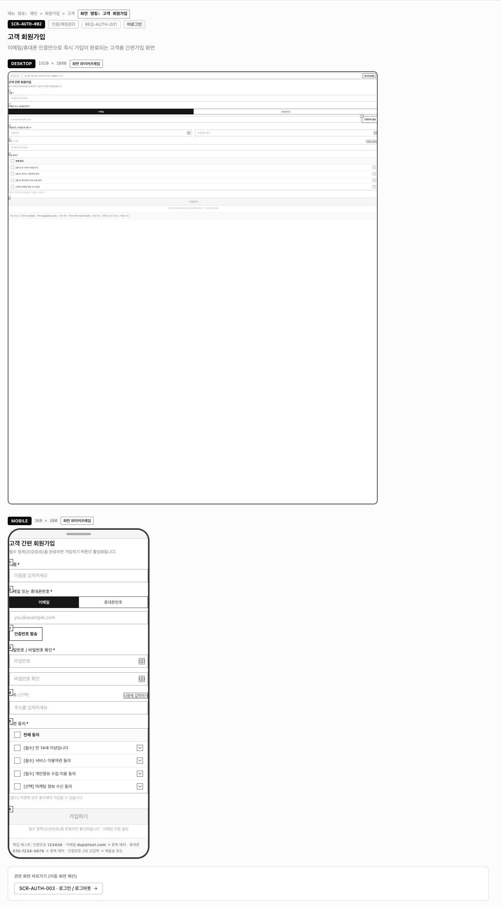
| NO | 구분 | UI 요소명 | 인터랙션 및 로직 정의 | 이동 화면 / 비고 | 매핑 요구사항ID |
|---|---|---|---|---|---|
| ① | Happy Path | 이름 입력 | 필수 텍스트 필드. | - | FUNC-AUTH-001-02 |
| ② | Happy Path | 이메일/휴대폰 채널 탭 | "이메일" / "휴대폰번호" 탭 전환(선택된 탭은 검정 배경). 이메일 채널은 [인증번호 발송]→[확인] 절차, 휴대폰 채널은 형식 검증(10자리 이상)만으로 유효 처리. | - | FUNC-AUTH-001-02 |
| ⑦ | Happy Path | [인증번호 발송] / [재발송] 버튼 | 이메일 형식 유효 시 인증번호 발송(목업 코드 123456), 180초 타이머 시작. 이미 발송했다면 라벨이 "재발송"으로 바뀜. | - | FUNC-AUTH-001-02 |
| ⑦' | Edge Case | 이메일 검증 실패 | 형식 오류 시 "올바른 이메일 형식을 입력하세요", 중복 이메일(dup@test.com) 시 "이미 등록된 정보입니다". | - | FUNC-AUTH-001-02 |
| ⑧ | Happy Path | 인증번호 입력 + [확인] 버튼 | 6자리 숫자 입력, 목업 정답 123456 입력 후 [확인] 클릭 시 "✓ 이메일 인증 완료" 표시로 전환. | - | FUNC-AUTH-001-02 |
| ⑧' | Edge Case | 인증번호 오류/만료 | 오답 시 "인증번호가 일치하지 않습니다 (n/3회)", 3회 초과 시 "3회 잘못 입력했습니다. [재발송] 후 다시 시도"로 [확인] 버튼 비활성화. 180초 타이머 만료 시 "인증 시간이 만료되었습니다. [재발송] 해주세요" 안내와 함께 [확인] 비활성화. | - | FUNC-AUTH-001-02 |
| ③ | Happy Path | 비밀번호 / 비밀번호 확인 | 1자 이상 입력 + 두 값 일치 시 유효. 우측 눈 아이콘으로 마스킹 토글(보조 컨트롤). | - | FUNC-AUTH-001-02 |
| ③' | Edge Case | 비밀번호 불일치 | 확인 필드 blur 시 불일치하면 "비밀번호가 일치하지 않습니다" 오류. | - | FUNC-AUTH-001-02 |
| ④ | Happy Path | 주소 (선택) / [나중에 입력하기] | 선택 항목. "나중에 입력하기" 클릭 시 입력값 초기화 후 필드 비활성(placeholder "가입 후 마이페이지에서 입력할 수 있습니다"), 다시 누르면 "지금 입력하기"로 라벨 전환. | - | FUNC-AUTH-001-02 |
| ⑤ | Happy Path | 약관 동의 (전체동의 + 개별 4항목) | 전체동의 체크박스는 4개 항목을 일괄 토글. 각 항목 우측 화살표로 상세 아코디언 펼침. 만14세 이상/이용약관/개인정보 3개는 필수, 마케팅 수신은 선택. | - | FUNC-AUTH-001-02 |
| ⑤' | Edge Case | 필수 약관 미동의 | 필수 3항목 중 하나라도 미동의 시 "[필수] 약관에 모두 동의해야 가입할 수 있습니다" 안내, 가입하기 비활성 유지. | - | FUNC-AUTH-001-02 |
| ⑥ | Happy Path | [가입하기] 버튼 | ①③⑤ 및 채널별 인증이 모두 유효할 때 활성화. 클릭 시 "가입 처리 중..." 로딩(1.5초 목업) 후 즉시 "가입이 완료되었습니다" 완료 화면 표시(승인 절차 없음). | - | FUNC-AUTH-001-02 |
| ⑥' | Edge Case | 휴대폰 중복 가입 | 휴대폰 채널 값이 010-1234-5678(목업 중복값)이면 제출 시 "이미 등록된 정보입니다" 오류로 폼 복귀. | - | FUNC-AUTH-001-02 |
| ⑨ | Happy Path | [로그인 화면으로 이동 (SCR-AUTH-003)] 버튼 | 가입완료 화면에서 클릭 시 이동 안내 토스트 후 폼 초기화(목업). 완료 후 400ms 뒤 자동으로도 동일 토스트 노출. | SCR-AUTH-003 | FUNC-AUTH-001-02 |
SCR-AUTH-003(로그인) — 가입 완료 후 로그인 화면으로 이동.
메뉴 경로: 메인 > 로그인 — 전체 사용자 공용 로그인 화면. 인증 성공 시 역할에 따라 기본 화면으로 실제 라우팅되는 5개 화면 중 하나
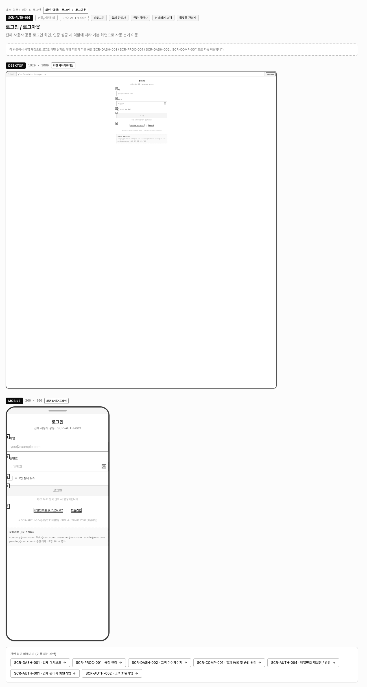
| NO | 구분 | UI 요소명 | 인터랙션 및 로직 정의 | 이동 화면 / 비고 | 매핑 요구사항ID |
|---|---|---|---|---|---|
| ① | Happy Path | 이메일 입력 | placeholder "you@example.com". | - | FUNC-AUTH-002-01 |
| ② | Happy Path | 비밀번호 입력 | Enter 키 입력 시 즉시 로그인 시도. 우측 눈 아이콘으로 마스킹 토글. | - | FUNC-AUTH-002-01 |
| ③ | Happy Path | 로그인 상태 유지 체크박스 | 단순 토글, 목업 상 별도 세션 연장 로직은 없음. | - | FUNC-AUTH-002-01 |
| ④ | Happy Path | [로그인] 버튼 | ①② 유효 형식 입력 시 활성화. 클릭 시 "인증 중..." 로딩 스피너(1.4초 목업) → 목업 계정과 일치하면 "JWT 발급 완료(목업)" 배지와 함께 역할별 이동 대상 화면을 안내 후 실제 라우팅으로 이동한다. | 업체관리자→SCR-DASH-001 / 현장담당자→SCR-PROC-001 / 고객→SCR-DASH-002 / 플랫폼관리자→SCR-COMP-001 | FUNC-AUTH-002-01 |
| ④' | Edge Case | 로그인 실패 | 계정 불일치 시 "이메일 또는 비밀번호가 올바르지 않습니다" + 실패 카운트 "n/5회" 표시. 5회 실패 시 캡차(CAPTCHA) 모달이 우선 노출되며, 체크 후 [인증 완료]를 눌러야 실패 카운트가 초기화되고 재시도 가능. | - | FUNC-AUTH-002-01 |
| ④'' | Edge Case | 승인 대기 계정 로그인 | pending@test.com처럼 pending 플래그가 있는 계정은 인증에 성공해도 "승인 대기 중" 모달로 안내하고 로그인 처리하지 않는다(SCR-AUTH-001의 승인 대기 상태와 연동). | - | FUNC-AUTH-002-01 |
| ⑤ | Happy Path | [비밀번호를 잊으셨나요?] / [회원가입] 링크 | 하단 텍스트 링크 2종. | SCR-AUTH-004 / SCR-AUTH-001·002 | - |
| ⑥ | Edge Case | 승인 대기 모달 [확인] 버튼 | 모달 닫기만 수행, 로그인 상태로 전환되지 않음. | - | FUNC-AUTH-002-01 |
| ⑦ | Edge Case | 캡차 모달 — 체크박스 + [인증 완료] 버튼 | "로봇이 아닙니다" 체크 전에는 [인증 완료] 비활성. 체크 후 클릭 시 실패 카운트를 0으로 초기화하고 모달을 닫아 재로그인을 허용. | - | FUNC-AUTH-002-01 |
| ⑥(로그인 후) | Happy Path | [로그아웃] 버튼 (헤더) | 로그인 성공 후 헤더 우측에 사용자명과 함께 노출. 클릭 시 확인 모달 후 클라이언트 토큰 폐기 및 로그인 화면으로 복귀(서버측 세션/블랙리스트 처리는 백엔드 담당). | SCR-AUTH-003 (재진입) | FUNC-AUTH-002-02 |
SCR-DASH-001 / SCR-PROC-001 / SCR-DASH-002 / SCR-COMP-001(역할별 실제 라우팅 대상), SCR-AUTH-004(비밀번호 재설정), SCR-AUTH-001/002(회원가입).
메뉴 경로: 메인 > 로그인 > 비밀번호 찾기(비로그인) / 마이페이지 > 비밀번호 변경(로그인) — 하나의 화면이 진입 경로(세션 유무)에 따라 상태 A(찾기)·상태 B(변경) 두 모드로 자동 전환
loggedIn 세션 여부로 자동 결정된다 ("진입 경로/세션에 따라 상태가 자동 결정됩니다" 안내 문구).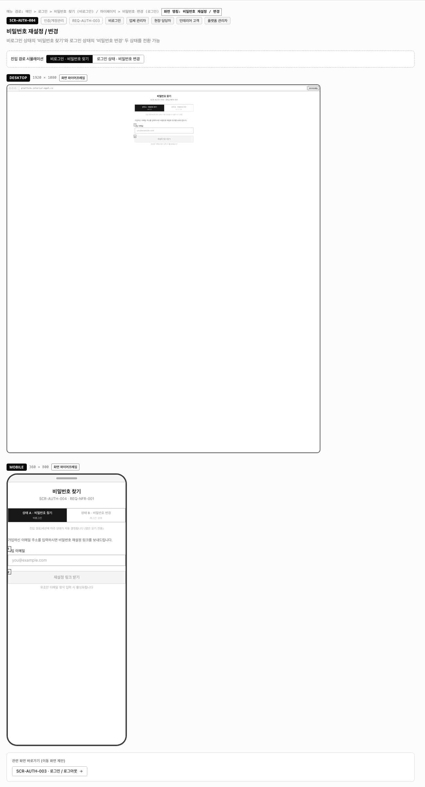
| NO | 구분 | UI 요소명 | 인터랙션 및 로직 정의 | 이동 화면 / 비고 | 매핑 요구사항ID |
|---|---|---|---|---|---|
| 상태 A — 비밀번호 찾기 (비로그인) | |||||
| ① | Happy Path | 가입 이메일 입력 | 이메일 형식 검증. Enter 키로도 요청 가능. | - | FUNC-AUTH-003-01 |
| ② | Happy Path | [재설정 링크 받기] 버튼 | 유효한 이메일일 때만 활성화. 클릭 시 1.3초 로딩 후 "재설정 링크를 이메일로 발송했습니다 (30분 이내 확인)" 안내로 전환. 보안상 계정 존재 여부와 무관하게 항상 동일한 안내를 표시(이메일 열거 공격 방지). | - | FUNC-AUTH-003-01 |
| ②' | Edge Case | [데모] 30분 경과 후 링크 클릭 버튼 | 만료 시나리오 재현용 데모 버튼. 클릭 시 "만료된 링크입니다 — 재설정 링크는 발송 후 30분간만 유효합니다" 화면으로 전환. | - | FUNC-AUTH-003-01 |
| ③ | Happy Path | [다시 요청하기] 버튼 | 만료 화면에서 클릭 시 이메일 입력 폼으로 초기화하여 복귀. | - | FUNC-AUTH-003-01 |
| 상태 B — 비밀번호 변경 (로그인 상태) | |||||
| ③(B) | Happy Path | 현재 비밀번호 입력 | 목업 현재 비밀번호는 "1234". 눈 아이콘으로 마스킹 토글. | - | FUNC-AUTH-003-02 |
| ③(B)' | Edge Case | 현재 비밀번호 불일치 | 제출 시 목업값과 다르면 "현재 비밀번호가 올바르지 않습니다" 인라인 오류. | - | FUNC-AUTH-003-02 |
| ④(B) | Happy Path | 신규 비밀번호 입력 | 입력할 때마다 규칙 4종 배지(8자 이상/영문 포함/숫자 포함/특수문자 포함)가 충족 여부(✓/○)로 실시간 갱신(REQ-NFR-001). | - | FUNC-AUTH-003-02 · REQ-NFR-001 |
| ⑤(B) | Happy Path | 신규 비밀번호 확인 | 신규값과 실시간 비교. | - | FUNC-AUTH-003-02 |
| ⑤(B)' | Edge Case | 신규 비밀번호 불일치 | 값이 다르면 "비밀번호가 일치하지 않습니다" 오류, 입력 필드 강조. | - | FUNC-AUTH-003-02 |
| ⑥(B) | Happy Path | [변경하기] 버튼 | 현재 비밀번호 입력 + 신규 비밀번호 규칙 충족 + 확인값 일치 시 활성화. 클릭 시 1.3초 로딩 후 "비밀번호가 변경되었습니다 — 보안을 위해 다시 로그인해주세요" 안내와 함께 로그인 화면 이동 카드 노출. | SCR-AUTH-003 | FUNC-AUTH-003-02 |
SCR-AUTH-003(로그인) — 비로그인 진입 지점이자 비밀번호 변경 완료 후 재로그인 유도 대상.
메뉴 경로: 메인 > 시스템관리 > 권한관리 — 역할별 메뉴 접근권한 토글 및 API 접근범위(읽기전용)·감사로그를 관리하는 화면
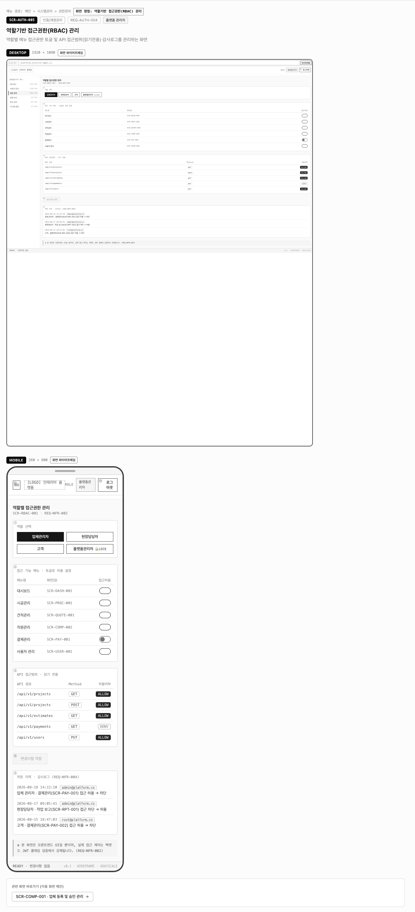
| NO | 구분 | UI 요소명 | 인터랙션 및 로직 정의 | 이동 화면 / 비고 | 매핑 요구사항ID |
|---|---|---|---|---|---|
| ① | Happy Path | 역할 선택 탭 (업체관리자/현장담당자/고객/플랫폼관리자🔒) | 탭 클릭 시 해당 역할의 메뉴 접근표·API 범위·감사로그로 전환. 플랫폼관리자는 잠금 표시로 편집 불가함을 사전 안내. | - | FUNC-AUTH-004-01 |
| ①' | Edge Case | 미저장 변경 중 탭 전환 시도 | 저장하지 않은 변경사항이 있는 상태에서 다른 역할 탭을 클릭하면 전환을 막고 "저장되지 않은 변경사항이 있습니다" 오류 토스트를 노출한다. | - | - |
| ② | Happy Path | 메뉴별 접근허용 토글 스위치 | 메뉴명·화면ID·접근허용(ON/OFF) 3열 테이블. 토글 클릭 시 즉시 로컬 상태 변경 + 상단에 "● 저장되지 않은 변경사항 (n)" 배지 노출, 푸터가 "DRAFT" 상태로 전환. | - | FUNC-AUTH-004-01 |
| ②' | Edge Case | 잠긴 역할의 토글 | 플랫폼관리자 탭에서는 모든 토글이 disabled(점선 테두리, 클릭 무반응)로 표시된다. | - | REQ-NFR-002 |
| ③ | Happy Path | API 접근범위 표 (읽기 전용) | API 경로·Method·허용여부(ALLOW/DENY 배지)를 나열하는 읽기 전용 표. 편집 컨트롤 없음 — 실제 서버 정책 확인용. | - | REQ-NFR-002 |
| ④ | Happy Path | [변경사항 저장] 버튼 | ①에서 1건 이상 변경(dirty)되고 잠긴 역할이 아닐 때만 활성화. 클릭 시 저장 확인 모달을 연다. | - | FUNC-AUTH-004-01 |
| ⑤ | Happy Path | 저장 이력(감사로그) 목록 | 변경 시각·처리자(actor)·변경 요약을 최신순으로 나열(REQ-NFR-004 변경이력 자동기록과 연결). | - | REQ-NFR-004 |
| ⑧ | Happy Path | 저장 확인 모달 — [확인·적용] 버튼 | 클릭 시 변경 건수를 감사로그에 즉시 1건 추가하고, 기준값을 갱신 후 "변경사항이 전체 사용자에게 적용되었습니다" 토스트 노출. | - | FUNC-AUTH-004-01 |
| ⑨ | Edge Case | 저장 확인 모달 — [실패 시뮬레이션] 버튼 | 저장 실패 상황을 재현하는 데모 버튼. 클릭 시 감사로그에 기록하지 않고 "권한 변경에 실패했습니다. 다시 시도해주세요" 오류 토스트와 함께 푸터가 "ERROR" 상태로 전환. | - | - |
| ⑦ | Happy Path | 저장 확인 모달 — [취소] 버튼 | 모달만 닫고 변경사항(dirty)은 유지. | - | - |
SCR-COMP-001(업체 승인관리) — 동일하게 플랫폼 관리자가 사용하는 시스템 관리 화면군.
메뉴 경로: 메인 > 업체관리 > 승인관리 — 가입 신청한 업체를 검토해 승인/반려 처리하는 화면. 로그인 성공 시 플랫폼 관리자의 실제 라우팅 기본 화면
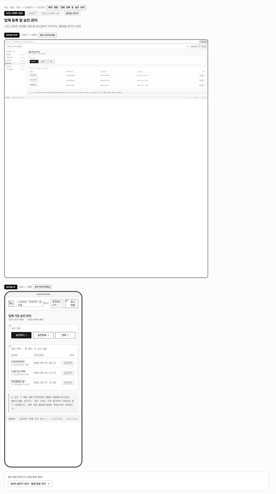
| NO | 구분 | UI 요소명 | 인터랙션 및 로직 정의 | 이동 화면 / 비고 | 매핑 요구사항ID |
|---|---|---|---|---|---|
| ① | Happy Path | 상태 필터 탭(승인대기/승인완료/반려) | 탭별 건수 배지 표시. 클릭 시 해당 상태 업체만 목록에 표시. | - | FUNC-COMP-001-01 |
| ② | Happy Path | 업체 목록 테이블 (행 클릭) | 상호명·사업자등록번호·담당자연락처·가입신청일·상태를 나열. 행 클릭 시 우측(데스크톱)/하단 오버레이(모바일)에 상세 패널을 연다. | - | FUNC-COMP-001-01 |
| ②' | Edge Case | 빈 목록 | 해당 상태의 업체가 0건이면 "해당 상태의 업체가 없습니다" 안내 행 표시. | - | - |
| ③ | Happy Path | 상세 패널 (로고/사업자정보/소개글) | 대표자명·사업자번호·업태/종목·담당자·이메일·사업장주소·가입신청일 전체 항목과 로고·소개글 미리보기를 표시. [✕] 버튼으로 닫기. | - | FUNC-COMP-001-01 |
| ④ | Happy Path | [승인] 버튼 | 승인대기 건에만 노출. 클릭 시 승인 확인 모달을 연다. | - | FUNC-COMP-001-02 |
| ⑨ | Happy Path | 승인 확인 모달 — [승인 확정] 버튼 | 클릭 시 해당 업체 상태를 "승인완료"로 전환, 처리일시·처리자를 기록하고 "계정이 즉시 활성화되고 업체 관리자에게 알림이 발송됩니다" 안내대로 SCR-NOTI-001 알림 트리거(목업)와 함께 성공 토스트 노출. | SCR-NOTI-001 (알림 트리거) | FUNC-COMP-001-02 |
| ⑤ | Happy Path | [반려] 버튼 | 승인대기 건에만 노출. 클릭 시 반려 사유 입력 모달을 연다. | - | FUNC-COMP-001-02 |
| ⑥ | Happy Path | 반려 사유 입력 모달 — 사유 textarea + [반려 확정] 버튼 | 사유는 필수(*) 입력이며 실시간 글자수 표시. 사유 입력 전에는 [반려 확정]이 점선 비활성 상태. | - | FUNC-COMP-001-02 |
| ⑥' | Edge Case | 반려 사유 미입력 | 공란이면 "사유 미입력 시 반려 확정 불가" 안내와 함께 버튼 비활성 유지. | - | FUNC-COMP-001-02 |
| ③' | Edge Case | 처리완료 건 재조회 | 승인완료/반려 상태의 업체를 다시 열면 "처리완료 — 추가 조치 불가" 안내만 표시되고 승인/반려 버튼은 렌더링되지 않는다. 반려 건은 사유가 수정 불가한 이력으로 함께 노출된다. | - | FUNC-COMP-001-02 |
SCR-NOTI-001(알림 발송 관리) — 승인 처리 시 발송되는 알림의 이력을 조회.
메뉴 경로: 메인 > 업체관리 > 직원관리 — 현장담당자를 초대하고 프로젝트를 배정하는 업체 관리자 화면
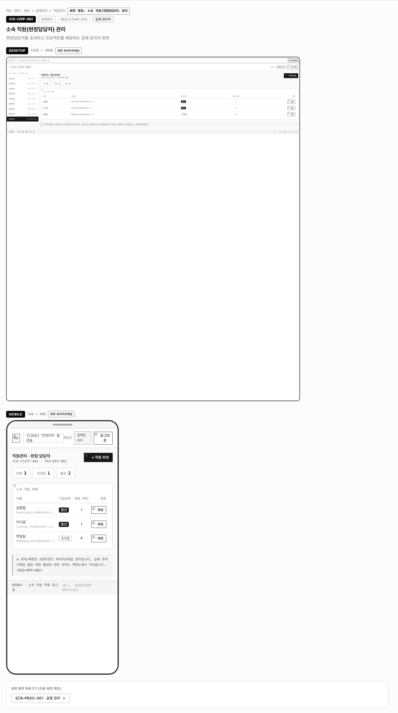
| NO | 구분 | UI 요소명 | 인터랙션 및 로직 정의 | 이동 화면 / 비고 | 매핑 요구사항ID |
|---|---|---|---|---|---|
| ① | Happy Path | [+ 직원 초대] 버튼 | 화면 상단 우측 고정. 클릭 시 초대 이메일 입력 모달을 연다. | - | FUNC-COMP-002-01 |
| ② | Happy Path | 초대 모달 — 이메일 입력 + [초대 발송] 버튼 | 이메일 입력 후 Enter 또는 [초대 발송] 클릭 시 형식 검증을 통과하면 목록에 "초대중" 상태로 즉시 추가되고 성공 토스트 노출. | - | FUNC-COMP-002-01 |
| ②' | Edge Case | 초대 입력 오류 | 공란 시 "이메일을 입력해주세요", 형식 오류 시 "올바른 이메일 형식이 아닙니다", 이미 등록된 이메일 재초대 시 "이미 초대된 이메일입니다" 오류. | - | FUNC-COMP-002-01 |
| ③ | Happy Path | 소속 직원 목록 테이블 | 이름·이메일·가입상태(초대중/활성)·배정 프로젝트 수를 나열. | - | FUNC-COMP-002-01 |
| ④ | Happy Path | [배정] 버튼 (행별) | 직원별 행 우측에 위치. 클릭 시 해당 직원의 프로젝트 배정 모달을 연다(기존 배정값을 체크 상태로 미리 채움). | - | FUNC-COMP-002-02 |
| ⑤/⑥ | Happy Path | 배정 모달 — 프로젝트 체크리스트 + [배정 저장] 버튼 | 다중 선택 가능한 프로젝트 체크리스트. 1개 이상 선택 시 [배정 저장] 활성화, 클릭 시 배정 건수를 목록에 즉시 반영하고 성공 토스트 노출. | - | FUNC-COMP-002-02 |
| ⑤' | Edge Case | 배정 미선택 | 선택 0건이면 "1개 이상 선택해야 배정 저장 가능" 안내와 함께 [배정 저장] 비활성. | - | FUNC-COMP-002-02 |
| ⑦ | Happy Path | 모달 공용 [취소] 버튼 | 초대/배정 모달 각각에서 입력값을 버리고 닫기. | - | - |
SCR-PROC-001(공정 관리) — 배정된 현장담당자가 실제로 진입해 공정을 관리하는 화면.
메뉴 경로: 메인 > 문의하기 — 업체를 선택해 공간정보·희망예산·희망일정을 입력하고 시공 문의를 등록하는 7단계 세로 스텝 폼
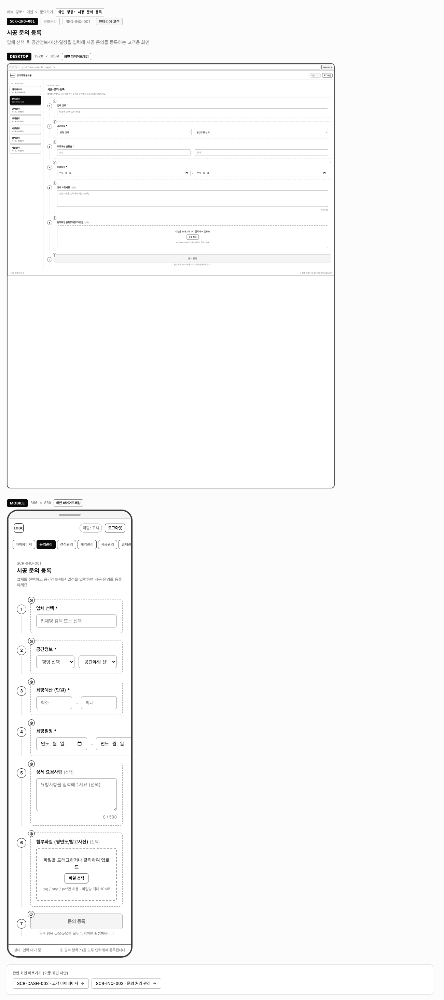
| NO | 구분 | UI 요소명 | 인터랙션 및 로직 정의 | 이동 화면 / 비고 | 매핑 요구사항ID |
|---|---|---|---|---|---|
| ① | Happy Path | 업체 선택 (검색형 드롭다운) | 업체명 검색어 입력 시 실시간 필터링된 드롭다운 목록 노출, 항목 클릭 시 선택 확정 및 "선택됨: OOO" 표시. | - | FUNC-INQ-001-01 |
| ①' | Edge Case | 검색 결과 없음 | 일치하는 업체가 없으면 "검색 결과 없음" 안내 표시. | - | FUNC-INQ-001-01 |
| ② | Happy Path | 공간정보 (평형 · 공간유형 드롭다운 2종) | 필수 셀렉트 2개. 평형 6단계, 공간유형 6종(아파트/빌라·연립/오피스텔/단독주택/상가·사무실/기타). | - | FUNC-INQ-001-01 |
| ③ | Happy Path | 희망예산 (최소~최대, 만원) | 숫자 입력 2개. 둘 다 입력해야 유효. | - | FUNC-INQ-001-01 |
| ③' | Edge Case | 예산 범위 오류 | 최소값이 최대값보다 크면 "⚠ 최소 예산이 최대 예산보다 클 수 없습니다" 실시간 오류 표시, 등록 버튼 비활성 조건에 포함. | - | FUNC-INQ-001-01 |
| ④ | Happy Path | 희망일정 (시작일~종료일) | date picker 2개, 필수. | - | FUNC-INQ-001-01 |
| ⑤ | Happy Path | 상세 요청사항 | 선택 입력, 최대 500자, 실시간 글자수 카운터. | - | FUNC-INQ-001-01 |
| ⑥ | Happy Path | 첨부파일 — 드래그&드롭 / [파일 선택] 버튼 | 평면도·참고사진 다중 첨부. 드래그 오버 시 박스 강조. jpg/png/pdf만 허용, 파일당 최대 10MB 안내 문구 고정 노출. 각 파일 항목에 [×] 삭제 버튼. | - | FUNC-INQ-001-02 |
| ⑥' | Edge Case | 첨부파일 형식/용량 오류 | 허용 형식(jpg/png/pdf)이 아니거나 10MB를 초과하면 해당 파일 행에 "⚠ 형식/용량을 확인해주세요" 오류 표시(등록 자체는 차단하지 않고 파일별 경고만 표시). | - | FUNC-INQ-001-02 |
| ⑦ | Happy Path | [문의 등록] 버튼 | ①②③④ 필수값 유효 시 활성화. 클릭 시 "접수 중..." 상태(1.2초 목업) 후 완료 화면으로 전환. | - | FUNC-INQ-001-01 |
| ⑧ | Happy Path | 완료 화면 — [마이페이지로 이동] / [새 문의 작성] 버튼 | 등록 완료 후 "담당 업체가 확인 후 연락드릴 예정입니다" 안내와 함께 2개 버튼 제공. [새 문의 작성]은 폼을 초기화하고 재입력 가능. | SCR-DASH-002(이동 제안) | FUNC-INQ-001-01 |
SCR-DASH-002(고객 마이페이지), SCR-INQ-002(문의 처리 관리 — 업체 측에서 이 문의를 확인·처리).
메뉴 경로: 메인 > 문의관리 — 접수된 문의를 상태별로 관리하고 담당자를 배정하는 화면. "견적서 작성하기" 선택 시 SCR-QUOTE-001로 실제 이동
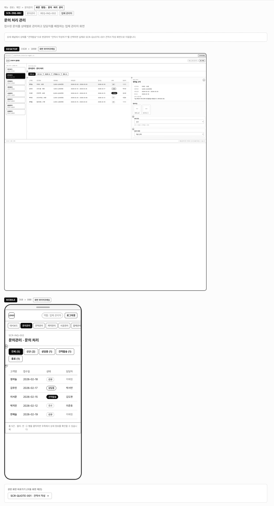
| NO | 구분 | UI 요소명 | 인터랙션 및 로직 정의 | 이동 화면 / 비고 | 매핑 요구사항ID |
|---|---|---|---|---|---|
| ① | Happy Path | 상태 필터 탭 (전체/신규/상담중/견적발송/종료) | 탭별 건수 표시, 클릭 시 목록 필터링. | - | FUNC-INQ-002-01 |
| ② | Happy Path | 문의 목록 테이블 (행 클릭) | 고객명·공간정보·희망예산·희망일정·접수일·상태·담당자 열. 행 클릭 시 상세 패널 오픈. | - | FUNC-INQ-002-01 |
| ②' | Edge Case | 빈 목록 | 필터 결과 0건이면 "해당 상태의 문의가 없습니다" 안내 행. | - | - |
| ③ | Happy Path | 상세 패널 (요청정보 + 첨부파일) | 공간정보·희망예산·희망일정·접수일·상세 요청사항 및 첨부파일 썸네일(PDF/IMG 라벨)을 표시. [×] 버튼으로 패널 닫기. | - | FUNC-INQ-002-01 |
| ④ | Happy Path | 상태 변경 드롭다운 | 신규→상담중→견적발송→종료 순서로 상태 전환. 하단에 흐름 안내 문구 고정. | - | FUNC-INQ-002-01 |
| ④' | Edge Case | 담당자 미배정 상태에서 "상담중" 전환 | 담당자가 없는 문의를 "상담중"으로 바꾸려 하면 전환을 막고 "담당자를 먼저 배정해주세요" 경고 토스트를 노출한다. | - | FUNC-INQ-002-01 |
| ④'' | Happy Path | "견적발송" 상태로 전환 시 확인 모달 | "견적서를 작성하시겠습니까?" 모달이 뜨며, [나중에]는 상태만 "견적발송"으로 바꾸고, [견적서 작성하기 →]는 상태 변경 + 실제로 SCR-QUOTE-001(/screens/scr-quote-001)로 라우팅한다(0.5초 지연 후 이동, 토스트로 사전 안내). | SCR-QUOTE-001 (실제 라우팅) | FUNC-INQ-002-01 |
| ⑤ | Happy Path | 담당자 배정 드롭다운 | 4명의 직원 목록 중 선택, 즉시 반영 + 성공 토스트("담당자가 'OOO'(으)로 배정되었습니다"). | - | FUNC-INQ-002-02 |
SCR-QUOTE-001(견적서 작성) — "견적서 작성하기" 선택 시 실제 라우팅으로 이동.
메뉴 경로: 메인 > 견적관리 > 작성 — 견적 항목을 구성하고 할인·합계를 실시간 계산해 고객에게 발송하는 화면
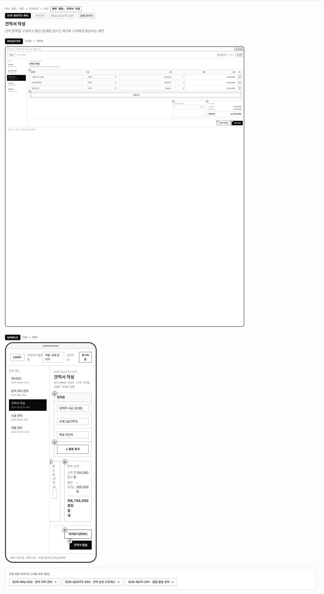
| NO | 구분 | UI 요소명 | 인터랙션 및 로직 정의 | 이동 화면 / 비고 | 매핑 요구사항ID |
|---|---|---|---|---|---|
| ① | Happy Path | 견적 항목 테이블 (항목명/구분/단가/수량/소계/[✕]삭제) | 항목명 텍스트, 구분(자재비·인건비·부대비용) 셀렉트, 단가·수량 숫자 입력. 소계 = 단가×수량으로 행 단위 실시간 계산. | - | FUNC-QUOTE-001-01 |
| ①' | Edge Case | 단가/수량 숫자 오류 | 숫자가 아닌 값 입력 시 해당 셀 테두리가 강조되고 소계란에 "숫자 확인" 표시, 하단에 "단가/수량에 잘못된 값이 있어 발송할 수 없습니다" 경고. 항목이 0건이면 "항목이 1개 이상 있어야 발송할 수 있습니다" 안내. | - | FUNC-QUOTE-001-01 |
| ② | Happy Path | [+ 항목 추가] 버튼 | 빈 행을 테이블 하단에 추가. | - | FUNC-QUOTE-001-01 |
| ③ | Happy Path | [✕] 행 삭제 버튼 | 해당 항목 행을 즉시 제거. | - | FUNC-QUOTE-001-01 |
| ④ | Happy Path | 할인율 입력 (선택, %) | 숫자만 허용, 100% 초과 시 100으로 클램프 처리되어 계산. | - | FUNC-QUOTE-001-01 |
| ④' | Edge Case | 할인율 숫자 오류 | 숫자가 아닌 값 입력 시 "숫자만 입력하세요" 오류, 발송 버튼 비활성 조건에 포함. | - | FUNC-QUOTE-001-01 |
| ⑤ | Happy Path | 합계 금액 영역 (읽기 전용) | 소계 합산 → 할인 금액 차감 → 최종 합계를 원화(천단위 콤마) 표기로 실시간 표시. | - | FUNC-QUOTE-001-01 |
| ⑥ | Happy Path | [미리보기(PDF)] 버튼 | 클릭 시 견적서 형태(항목·소계·최종 합계)의 PDF 미리보기 모달을 연다(목업 렌더링 영역으로 표기). | - | FUNC-QUOTE-001-02 |
| ⑦ | Happy Path | [견적서 발송] 버튼 | 항목 1건 이상 + 모든 셀 유효 + 할인율 유효 시 활성화. 클릭 시 발송 확인 모달 → [발송하기] 클릭 시 발송 완료 처리, 문의 상태 '견적발송'으로 갱신, 고객 알림(SCR-NOTI-001) 트리거를 푸터에 안내. | SCR-INQ-002 목록 복귀 · SCR-QUOTE-002 고객 알림 · SCR-NOTI-001 트리거 | FUNC-QUOTE-001-02 |
| ⑦' | Happy Path | 발송 확인 모달 — [취소]/[발송하기] 버튼 | [취소]는 모달만 닫고, [발송하기]가 실제 발송을 확정한다(2단계 확인으로 오발송 방지). | - | FUNC-QUOTE-001-02 |
SCR-INQ-002(문의 처리 관리 — 진입 경로), SCR-QUOTE-002(견적 승인 프로세스 — 발송 후 고객이 확인), SCR-NOTI-001(알림 발송 관리).
메뉴 경로: 메인 > 견적확인 — 고객이 견적을 승인/거절하는 화면. 업체 관리자로 보면 수정이력만 조회 가능한 읽기전용 모드로 자동 전환
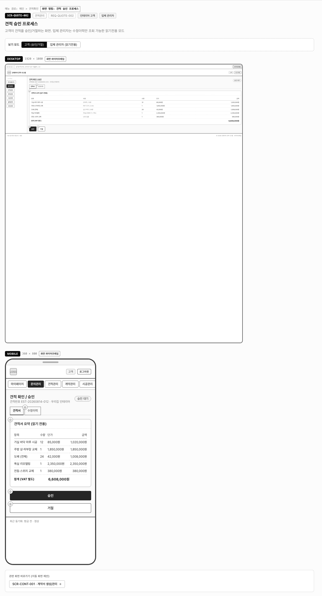
| NO | 구분 | UI 요소명 | 인터랙션 및 로직 정의 | 이동 화면 / 비고 | 매핑 요구사항ID |
|---|---|---|---|---|---|
| ① | Happy Path | 견적서 요약 카드 (읽기 전용) | 항목·사양·수량·단가·금액과 VAT 별도 합계를 표 형태로 표시. | - | FUNC-QUOTE-002-01 |
| ② | Happy Path | [승인] 버튼 (고객 전용) | 클릭 시 승인 확인 모달 → 확정 시 상태가 "승인완료"로 전환되고 SCR-CONT-001 계약서 자동 생성이 트리거됨을 토스트로 안내. | SCR-CONT-001 (트리거) | FUNC-QUOTE-002-01 |
| ③ | Happy Path | [거절] 버튼 (고객 전용) | 클릭 시 거절 사유 입력 모달을 연다. | - | FUNC-QUOTE-002-01 |
| ③' | Edge Case | 거절 사유 입력 + 확정 | 사유 입력 후 확정 시 상태가 "거절"로 전환되고 "업체측에 알림이 전송되었습니다" 토스트 노출. | - | FUNC-QUOTE-002-01 |
| - | Edge Case | 이미 처리된 견적 재조회 | 승인완료/거절 상태에서는 "이미 처리된 견적입니다" 안내와 현재 상태 배지만 표시되고 승인/거절 버튼은 렌더링되지 않는다. | - | FUNC-QUOTE-002-01 |
| ⑤ | Happy Path | [수정이력] 탭 + 이력 목록 | 버전 배지·요약·수정일시/수정자·금액을 나열, 항목 클릭 시 상세 모달(스냅샷 재현)을 연다. 고객은 [견적서] 탭과 함께 선택 가능, 업체 관리자는 이 탭만 강제 노출(읽기 전용). | - | FUNC-QUOTE-002-02 |
SCR-CONT-001(계약서 생성/관리) — 견적 승인 시 자동으로 계약서 초안이 생성됨.
메뉴 경로: 메인 > 계약관리 — 승인된 견적을 기반으로 계약서를 생성하고 전자서명(목업)·상태를 관리하는 화면
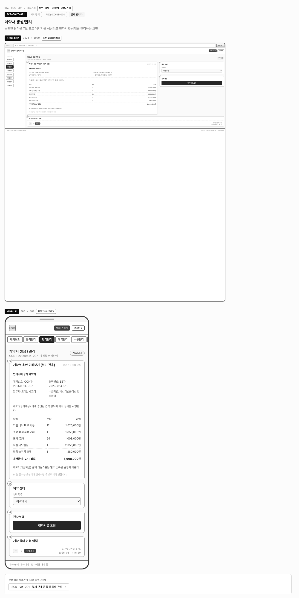
| NO | 구분 | UI 요소명 | 인터랙션 및 로직 정의 | 이동 화면 / 비고 | 매핑 요구사항ID |
|---|---|---|---|---|---|
| ① | Happy Path | 계약서 초안 미리보기 (읽기 전용) | 계약번호·견적번호·발주자/수급자, 승인된 견적 항목표, 계약금액(VAT별도)을 자동 인용하여 표시. "본 문서는 초안이며 전자서명 후 효력이 발생합니다" 고지문 포함. | - | FUNC-CONT-001-01 |
| ② | Happy Path | 계약 상태 변경 드롭다운 (계약대기→체결→완료) | 선택 시 즉시 상태 전환 + 이력 1건 자동 추가 + 성공 토스트. "체결" 전환 시 결제 마일스톤 등록 가능 배너가 나타난다. | - | FUNC-CONT-001-02 |
| ②' | Edge Case | 단계 건너뛰기 시도 | "계약대기" 상태에서 곧바로 "완료"로 전환을 시도하면 "체결 상태를 먼저 진행해주세요" 경고를 표시하고 전환을 막는다(순차 전환 강제). | - | FUNC-CONT-001-02 |
| ③ | Happy Path | [전자서명 요청] 버튼 → 서명 모달 | 클릭 시 "외부 전자서명 서비스 연동은 학습 범위 밖입니다. 아래 체크박스로 서명 완료를 대체합니다" 안내와 함께 [서명을 완료했습니다] 체크박스를 제공하는 목업 모달을 연다. 체크 후 [확인] 클릭 시 "✓ 서명완료" 배지로 전환. | - | FUNC-CONT-001-03 |
| ③' | Edge Case | 서명 미체크 상태에서 확인 | 체크박스를 선택하지 않으면 [확인] 버튼이 비활성 상태로 유지된다. | - | FUNC-CONT-001-03 |
| - | Happy Path | [SCR-PAY-001 결제 마일스톤 등록 →] 배너 버튼 | 계약이 "체결" 또는 "완료" 상태일 때만 노출되는 이동 안내 버튼. | SCR-PAY-001 | FUNC-CONT-001-02 |
| ⑤ | Happy Path | 계약 상태 변경 이력 목록 | 변경 전→후 상태, 변경자, 변경일시를 최신순으로 나열(REQ-NFR-004 변경이력 자동기록과 연계). | - | FUNC-CONT-001-02 |
SCR-PAY-001(결제 단계 등록 및 상태 관리) — 계약 체결 후 결제 마일스톤을 등록하는 다음 단계.
메뉴 경로: 메인 > 시공관리 > 공정관리 — 세로 타임라인/체크리스트 형태로 공정 단계별 진행률과 지연 이슈를 관리하는 화면. SCR-DASH-001의 프로젝트 리스트 행 클릭 시 실제 라우팅으로 도달하는 화면
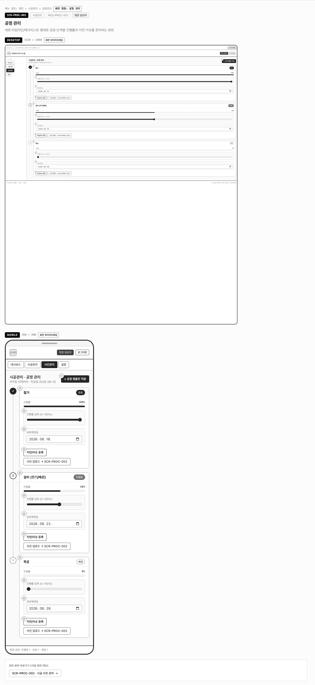
| NO | 구분 | UI 요소명 | 인터랙션 및 로직 정의 | 이동 화면 / 비고 | 매핑 요구사항ID |
|---|---|---|---|---|---|
| ① | Happy Path | [+ 공정 템플릿 적용] 버튼 → 템플릿 모달 | 클릭 시 철거/설비/마감 등 표준 공정 체크리스트 모달을 연다. 기본적으로 전체 선택된 상태이며 개별 해제 가능. [n개 등록] 버튼 클릭 시 선택 항목이 세로 타임라인으로 일괄 등록. | - | FUNC-PROC-001-01 |
| ①' | Edge Case | 템플릿 0건 선택 | 모든 항목을 해제하면 [n개 등록] 버튼이 비활성화된다. | - | FUNC-PROC-001-01 |
| ② | Happy Path | 공정 단계 카드 (타임라인 노드) | 단계명·상태 배지(예정/진행중/완료)를 표시. 완료 시 원형 노드가 체크(✓) 아이콘으로 바뀐다. | - | FUNC-PROC-001-01 |
| ③ | Happy Path | 진행률 슬라이더 (0~100%, 5% 단위) | 슬라이더 이동 시 진행률 프로그레스바가 실시간 갱신되고, 진행률 구간에 따라 상태(예정/진행중/완료)가 자동 매핑된다. 100%에 도달하면 자동으로 "완료" 처리 및 완료 토스트 노출. | - | FUNC-PROC-001-02 |
| ④ | Happy Path | 완료예정일 date picker | 단계별 완료예정일을 변경. | - | FUNC-PROC-001-02 |
| ④' | Edge Case | 완료일 오류 | 선택한 완료일이 프로젝트 착공일보다 이전이면 "⚠ 완료일이 프로젝트 시작일(YYYY-MM-DD)보다 이전입니다" 오류 문구를 표시(제출 자체를 막지는 않고 경고). | - | FUNC-PROC-001-02 |
| ⑤ | Happy Path | [지연/이슈 등록] 버튼 → 이슈 모달 | 클릭 시 지연 사유(필수)·예상 지연기간(선택) 입력 모달을 연다. 등록 시 카드 헤더에 "⚠ 지연" 배지가 추가되고(hover 시 사유 툴팁), 등록 완료 토스트 노출. | - | FUNC-PROC-001-03 |
| ⑤' | Edge Case | 지연 사유 미입력 | 사유가 공란이면 [등록] 버튼이 비활성 상태로 유지된다. | - | FUNC-PROC-001-03 |
| - | Happy Path | [사진 업로드 → SCR-PROC-002] 버튼 | 각 공정 카드 하단의 이동 안내 버튼(현재 프로토타입에서는 실제 라우팅이 아닌 라벨 안내). | SCR-PROC-002 (이동 제안) | REQ-PROC-002 |
SCR-PROC-002(시공 사진 관리) — 공정 단계별 사진 업로드로 이어지는 다음 액션. SCR-DASH-001에서 프로젝트 행 클릭 시 실제 라우팅으로 진입.
메뉴 경로: 메인 > 시공관리 > 사진관리(현장담당자) / 메인 > 마이페이지 > 사진갤러리(고객) — 모드 A(업로드)·모드 B(읽기전용 갤러리) 두 모드를 전환할 수 있는 화면
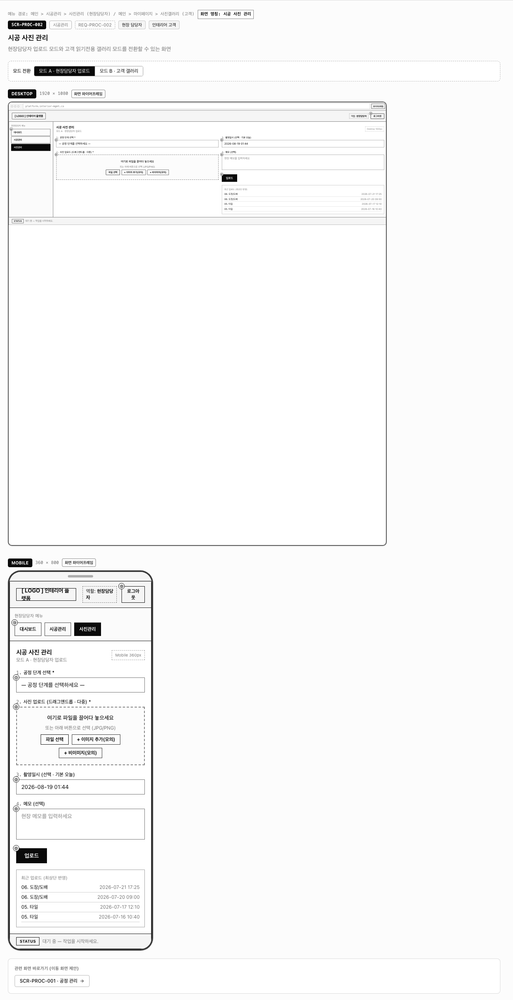
| NO | 구분 | UI 요소명 | 인터랙션 및 로직 정의 | 이동 화면 / 비고 | 매핑 요구사항ID |
|---|---|---|---|---|---|
| 모드 A — 현장담당자 업로드 | |||||
| ① | Happy Path | 공정 단계 선택 (필수) | 드롭다운으로 사진을 연결할 공정 단계를 지정. | - | FUNC-PROC-002-01 |
| ①' | Edge Case | 공정 단계 미선택 업로드 시도 | 미선택 상태로 [업로드] 클릭 시 "⚠ 공정 단계를 먼저 선택해주세요" 오류와 함께 업로드가 중단된다. | - | FUNC-PROC-002-01 |
| ② | Happy Path | 사진 업로드 드롭존 — [파일 선택]/[+ 이미지 추가(모의)] 버튼 | 드래그앤드롭 또는 버튼으로 다중 이미지 스테이징. 스테이징된 파일은 썸네일 + [×] 삭제로 나열. | - | FUNC-PROC-002-01 |
| ②' | Edge Case | 비이미지 파일 업로드 (+ 비이미지(모의) 버튼) | 이미지가 아닌 파일은 "이미지 파일만 업로드할 수 있습니다" 오류 토스트로 거부되고 스테이징되지 않는다(형식 제약 REQ-PROC-002-01 반영). | - | FUNC-PROC-002-01 |
| ③ | Happy Path | 촬영일시 (선택, 기본값 오늘) | 텍스트 입력(YYYY-MM-DD HH:mm). | - | FUNC-PROC-002-01 |
| ④ | Happy Path | 메모 (선택) | 현장 메모 자유 입력. | - | FUNC-PROC-002-01 |
| ⑤ | Happy Path | [업로드] 버튼 | 클릭 시 진행률 바가 0→100%로 애니메이션되며(목업), 완료 시 새 사진이 목록 최상단에 반영되고 "n장 업로드 완료" 알림. | - | FUNC-PROC-002-01 |
| 모드 B — 고객 읽기전용 갤러리 | |||||
| ⑥ | Happy Path | 공정단계별 갤러리 그리드 | 공정 단계 그룹 헤더 + 사진 썸네일(날짜·메모 캡션) 그리드. 썸네일 클릭 시 확대 모달 오픈. | - | FUNC-PROC-002-02 |
| ⑦ | Happy Path | 사진 확대 모달 — [‹]/[›] 이전·다음 버튼 | 공정단계·촬영일시·메모 상세 정보와 함께 좌우 탐색. 첫/마지막 사진에서는 해당 방향 버튼이 비활성화. | - | FUNC-PROC-002-02 |
| ⑪ | Happy Path | [더 보기 (무한스크롤/페이징)] 버튼 | 클릭할 때마다 6장씩 추가 노출, 전체를 다 불러오면 "모든 사진을 불러왔습니다"로 대체. | - | FUNC-PROC-002-02 |
SCR-PROC-001(공정 관리) — 업로드된 사진이 연결되는 상위 공정 단계 화면.
메뉴 경로: 메인 > 결제관리 — 계약금/중도금/잔금 등 결제 마일스톤을 등록하고 입금을 확인하는 화면
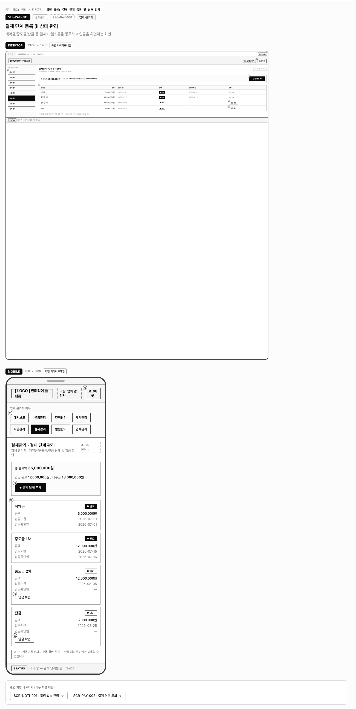
| NO | 구분 | UI 요소명 | 인터랙션 및 로직 정의 | 이동 화면 / 비고 | 매핑 요구사항ID |
|---|---|---|---|---|---|
| ① | Happy Path | [+ 결제 단계 추가] 버튼 → 등록 모달 | 결제단계명(필수)·금액(필수)·입금기한(선택) 입력 후 [등록] 클릭 시 "대기" 상태로 목록에 즉시 추가. | - | FUNC-PAY-001-01 |
| ①' | Edge Case | 등록 입력값 오류 | 단계명 공란 시 "결제단계명을 입력해주세요.", 금액이 공란/숫자아님/0 이하이면 "금액을 입력해주세요." 또는 "금액은 0보다 큰 값이어야 합니다." 오류 토스트와 인라인 메시지. | - | FUNC-PAY-001-01 |
| ③ | Happy Path | 결제 마일스톤 목록 (단계명/금액/입금기한/상태/입금확인일) | 데스크톱은 표, 모바일은 카드형으로 동일 정보를 표시. | - | FUNC-PAY-001-01 |
| ④ | Happy Path | [입금 확인] 버튼 (대기 상태 행) → 확인 모달 | 입금확인일(필수, 기본 오늘)·메모(선택) 입력 후 [확인] 클릭 시 상태가 대기→완료로 전환되고 "고객에게 결제 완료 알림이 발송됩니다" 안내. | SCR-NOTI-001 (알림 트리거) | FUNC-PAY-001-02 |
| ④' | Edge Case | 완료 처리 되돌리기 불가 | "완료 처리된 단계는 되돌릴 수 없습니다"를 모달·하단 고정 문구 양쪽에 명시하여 오조작을 방지. | - | FUNC-PAY-001-02 |
SCR-NOTI-001(알림 발송 관리 — 입금 확인 시 알림 트리거), SCR-PAY-002(결제 이력 조회 — 동일 데이터를 고객/업체 양쪽에서 읽기전용으로 노출).
메뉴 경로: 메인 > 마이페이지 > 결제내역(고객) / 메인 > 대시보드 > 결제현황(업체) — 결제 단계별 타임라인·진행률을 보여주는 읽기전용 임베드 컴포넌트를 고객/업체 양쪽 컨텍스트에서 재사용
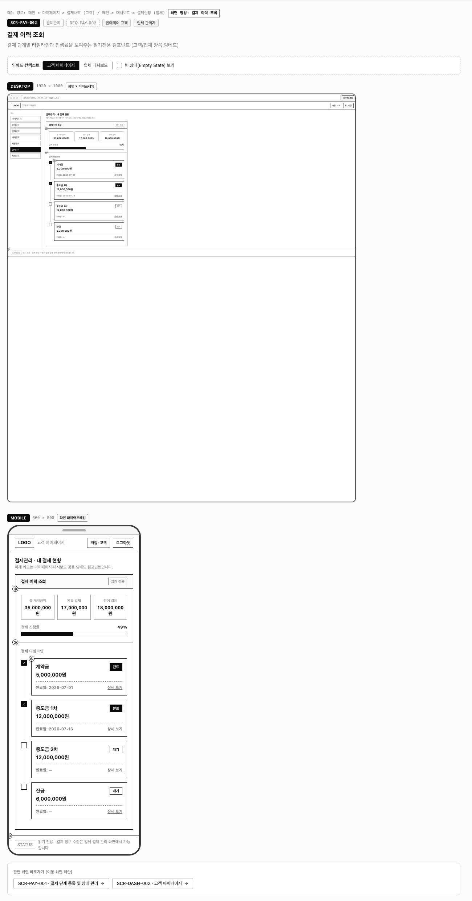
| NO | 구분 | UI 요소명 | 인터랙션 및 로직 정의 | 이동 화면 / 비고 | 매핑 요구사항ID |
|---|---|---|---|---|---|
| - | Happy Path | 결제 이력 카드 (PaymentHistoryCard, 공용 컴포넌트) | 결제 단계명·금액·상태·입금확인일을 타임라인/리스트 형태로 표시. 편집 컨트롤이 전혀 없는 순수 읽기전용 컴포넌트. | - | FUNC-PAY-002-01 |
| - | Edge Case | 결제 정보 없음 (빈 상태) | 결제 마일스톤이 하나도 없으면 카드가 빈 상태로 렌더링되고, 하단 상태 영역에 "등록된 결제 정보 없음 — 빈 상태 표시 중"이 표시된다. | - | - |
| ④ | Happy Path | 하단 상태(STATUS) 영역 | 기본 상태에서는 "읽기 전용 · 결제 정보 수정은 업체 결제 관리 화면(SCR-PAY-001)에서 가능합니다" 고정 안내 노출. | SCR-PAY-001 (안내 텍스트로 참조) | - |
SCR-PAY-001(결제 단계 등록 및 상태 관리 — 실제 수정), SCR-DASH-002(고객 마이페이지 — 결제 탭으로 임베드).
메뉴 경로: 메인 > 알림관리 — 이벤트 기반 자동 발송된 알림의 발송이력을 조회/모니터링하고 실패 건을 재발송하는 화면
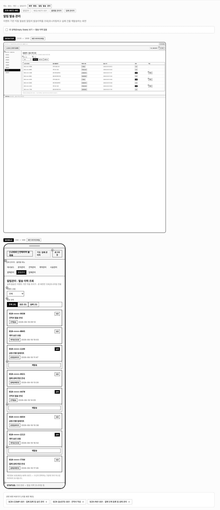
| NO | 구분 | UI 요소명 | 인터랙션 및 로직 정의 | 이동 화면 / 비고 | 매핑 요구사항ID |
|---|---|---|---|---|---|
| ① | Happy Path | 이벤트 유형 필터 (전체/견적발송/계약승인요청/공정업데이트/결제상태변경) | 드롭다운 선택 시 목록 필터링. 요구사항의 4대 알림 트리거 이벤트와 1:1 대응. | - | FUNC-NOTI-001-01 |
| ② | Happy Path | 발송 상태 탭 (전체/성공/실패, 건수 표시) | 탭 클릭 시 상태별 필터링. | - | FUNC-NOTI-001-02 |
| ③ | Happy Path | 발송 이력 목록 (수신자연락처/템플릿명/이벤트유형/발송시각/상태) | 행(데스크톱) 또는 카드(모바일) 클릭 시 상세 패널을 연다. 수신자 연락처는 가운데 자리 마스킹 처리되어 표시(REQ-NFR-007 개인정보 보호). | - | FUNC-NOTI-001-02 |
| ③' | Edge Case | 필터 결과 없음 | 선택한 필터 조건에 해당하는 이력이 없으면 "선택한 필터 조건에 해당하는 발송 이력이 없습니다" 안내. | - | - |
| ④ | Happy Path | [재발송] 버튼 (실패 건에만 노출) → 확인 모달 | 실패 사유·수신자·템플릿을 보여주는 확인 모달에서 [재발송 실행] 클릭 시 상태가 실패→성공으로 전환되고 발송시각이 현재시각으로 갱신, 성공 토스트 노출. | - | FUNC-NOTI-001-02 |
| ⑤ | Happy Path | 상세 패널 (행 클릭) | 수신자·템플릿명·이벤트유형·발송시각·상태와 발송 요청 본문 미리보기를 표시. 실패 건은 실패 사유를 별도로 강조. | - | FUNC-NOTI-001-02 |
SCR-COMP-001(업체 승인 시 알림 트리거), SCR-QUOTE-001(견적발송 시 알림 트리거), SCR-PAY-001(입금 확인 시 알림 트리거) — 3개 화면 모두 이 화면의 알림 이력 데이터를 생성하는 소스.
메뉴 경로: 메인 > 대시보드 (업체관리자 로그인 시 기본 진입 화면) — 진행중 프로젝트·신규 문의·결제 현황 요약과 공정단계별 분포 차트를 보여주는 화면
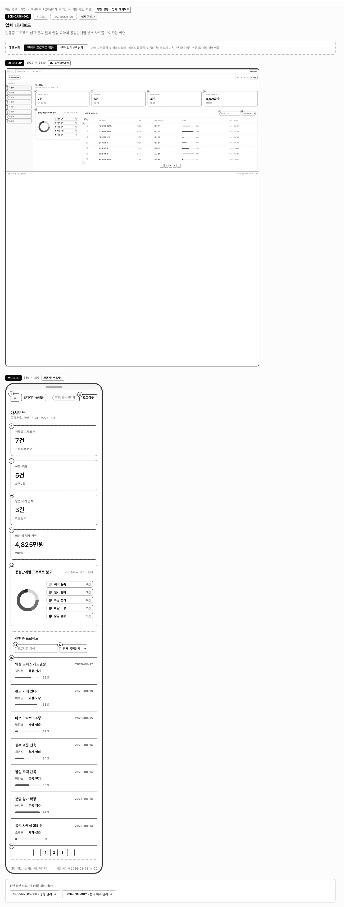
| NO | 구분 | UI 요소명 | 인터랙션 및 로직 정의 | 이동 화면 / 비고 | 매핑 요구사항ID |
|---|---|---|---|---|---|
| - | Happy Path | 요약 카드 (Summary Cards, 4열) | 진행중 프로젝트 건수 등 핵심 지표를 카드로 요약. | - | FUNC-DASH-001-01 |
| - | Happy Path | 공정단계별 분포 차트 (StageChart) | 구간(막대/세그먼트) 클릭 시 해당 공정단계로 프로젝트 리스트를 필터링. 다시 클릭하면 필터 해제(토글). | - | FUNC-DASH-001-01 |
| - | Happy Path | 프로젝트 리스트 테이블 (행 클릭) | 차트에서 선택한 단계로 필터링 가능. 행 클릭 시 이동 확인 모달 → 확정 시 SCR-PROC-001(공정 관리)로 실제 라우팅(0.5초 지연 후 이동, 토스트로 사전 안내). | SCR-PROC-001 (실제 라우팅) | FUNC-DASH-001-01 |
| - | Edge Case | 빈 상태 (신규 업체, 진행 프로젝트 0건) | 요약 카드/차트/리스트 대신 전용 빈 상태 화면이 표시되며, [문의 확인하러 가기] 버튼 클릭 시 SCR-INQ-002(문의 처리 관리)로 실제 라우팅된다. | SCR-INQ-002 (실제 라우팅) | - |
| - | Happy Path | [로그아웃] 버튼 (헤더) | 클릭 시 로그인 화면으로 복귀(목업). | SCR-AUTH-003 | FUNC-AUTH-002-02 |
SCR-PROC-001(공정 관리 — 실제 라우팅), SCR-INQ-002(문의 처리 관리 — 실제 라우팅, 빈 상태 CTA).
메뉴 경로: 메인 > 마이페이지 (고객 로그인 시 기본 진입 화면) — 견적·계약·공정·결제·사진을 탭으로 구분해 한 화면에서 조회하는 프로젝트 통합 조회 화면
/mypage/PRJ-2041#tab=quote)로 표현되어 새로고침 후에도 탭이 유지되는 것처럼 시연한다.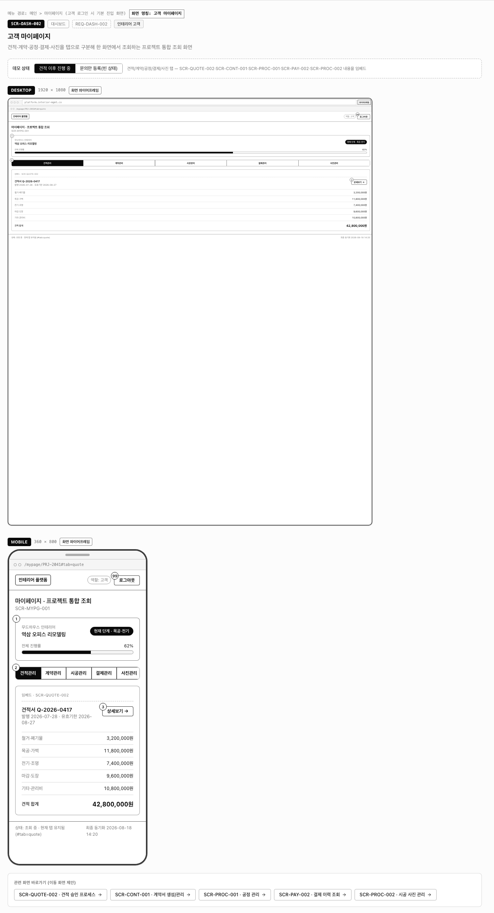
| NO | 구분 | UI 요소명 | 인터랙션 및 로직 정의 | 이동 화면 / 비고 | 매핑 요구사항ID |
|---|---|---|---|---|---|
| ① | Happy Path | 프로젝트 요약 헤더 | 업체명·프로젝트명, 현재 단계 배지, 전체 진행률 프로그레스바(%). | - | FUNC-DASH-002-01 |
| ② | Happy Path | 탭 메뉴 (견적관리/계약관리/시공관리/결제관리/사진관리) | 탭 클릭 시 해당 도메인 화면(SCR-QUOTE-002/SCR-CONT-001/SCR-PROC-001/SCR-PAY-002/SCR-PROC-002)의 컴포넌트를 이 화면 안에 임베드하여 표시. | SCR-QUOTE-002 · SCR-CONT-001 · SCR-PROC-001 · SCR-PAY-002 · SCR-PROC-002 (임베드) | FUNC-DASH-002-01 |
| ③ | Edge Case | 빈 상태 — [내 문의 상태 확인] 버튼 | 아직 견적 발행 전(문의만 등록)이면 모든 탭이 비활성화(클릭 불가)되고 "아직 진행 중인 단계가 아닙니다 — 문의만 등록된 상태입니다" 안내와 함께 문의 상태 확인 버튼만 노출된다. | SCR-INQ-001 (이동 제안) | - |
SCR-QUOTE-002, SCR-CONT-001, SCR-PROC-001, SCR-PAY-002, SCR-PROC-002 — 5개 탭에 임베드되는 원본 화면.
메뉴 경로: 메인 > 문의관리 > 자동분류 결과 — 규칙/통계 기반(LLM 아님) 자동분류 결과를 확인하고 담당자가 수동 정정할 수 있는 화면
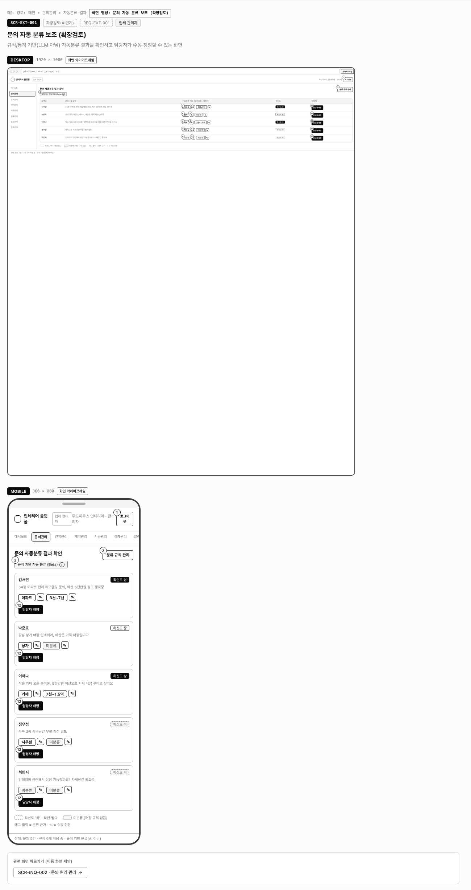
| NO | 구분 | UI 요소명 | 인터랙션 및 로직 정의 | 이동 화면 / 비고 | 매핑 요구사항ID |
|---|---|---|---|---|---|
| ② | Happy Path | "규칙 기반 자동 분류 (Beta)" 배지 + [i] 정보 버튼 | hover/클릭 시 "본 분류는 키워드 매칭 규칙과 통계 기반으로 동작하며, AI/LLM 모델의 판단이 아닙니다. 결과는 참고용이며 담당자 확인·정정이 필요합니다" 툴팁 노출. | - | FUNC-EXT-001-01 |
| ③ | Happy Path | [분류 규칙 관리] 버튼 → 규칙 모달 | 클릭 시 현재 적용 중인 키워드→태그 매칭 규칙 목록을 열람하고 규칙을 추가/삭제할 수 있는 모달을 연다. | - | FUNC-EXT-001-01 |
| ④ | Happy Path | 자동분류 태그 (공간유형 · 예산대) — ClassifyTag | 태그 클릭 시 분류 근거(매칭된 규칙 ID)를 보여준다. | - | FUNC-EXT-001-01 |
| ⑤ | Edge Case | [✎ 수동 정정] — 태그 값 변경 | 담당자가 태그를 직접 다른 값으로 정정 가능. 정정 시 "수동 정정 저장됨 · 규칙 개선 데이터로 수집" 토스트가 뜨고 해당 문의에 "정정됨" 표시가 남는다. | - | FUNC-EXT-001-01 |
| - | Edge Case | 확신도 "하" / 미분류 태그 | 확신도가 낮은 항목은 점선 테두리로 시각적 구분되어 "확인 필요"임을 알리고, 매칭 규칙이 전혀 없으면 "미분류" 상태로 표기된다(범례에 색상 규칙 안내). | - | - |
| ⑫ | Happy Path | [담당자 배정] 버튼 (행별) | SCR-INQ-002의 담당자 배정 로직을 재사용하는 버튼(이 화면에서 바로 배정 가능). | SCR-INQ-002 (로직 재사용) | - |
SCR-INQ-002(문의 처리 관리) — 담당자 배정 로직을 공유하는 상위 화면.
5장 각 화면의 디스크립션 표 "구분" 컬럼은 아래 두 값 중 하나로만 표기하며, 배지 색상으로도 구분한다.
| 구분 | 정의 | 예시 |
|---|---|---|
| Happy Path | 사용자가 유효한 입력으로 정상 절차를 따라갈 때의 기본 흐름. 필수값이 올바르게 채워지고, 권한이 있으며, 외부 연동(API/PG/알림)이 정상 응답하는 경우. | 모든 필수 항목 입력 후 "가입하기" 클릭 → 승인대기 상태 전환 |
| Edge Case | 입력 오류, 권한 부족, 외부 시스템 실패, 상태 충돌, 빈 데이터 등 정상 흐름을 벗어나는 모든 분기. 화면은 반드시 사용자에게 원인과 다음 행동을 안내해야 한다. | 사업자등록번호 형식 오류, 비밀번호 재설정 링크 30분 만료, 결제 상태 충돌, 네트워크 장애 토스트 |
요구사항 정의서 4장 "관련 화면 ID" 컬럼(요구사항 → 화면 방향)과 본 문서 5장 각 화면의 "매핑 요구사항ID" 컬럼(화면 → 요구사항 방향)이 아래 표를 통해 양방향으로 교차 참조된다.
| 화면 ID | 화면명 | 대분류 | 매핑 요구사항 ID | 대상 역할 |
|---|---|---|---|---|
| SCR-AUTH-001 | 업체 관리자 회원가입 | 인증/계정관리 | REQ-AUTH-001 | 비로그인 |
| SCR-AUTH-002 | 고객 회원가입 | 인증/계정관리 | REQ-AUTH-001 | 비로그인 |
| SCR-AUTH-003 | 로그인 / 로그아웃 | 인증/계정관리 | REQ-AUTH-002 | 전체 |
| SCR-AUTH-004 | 비밀번호 재설정 / 변경 | 인증/계정관리 | REQ-AUTH-003 | 전체 |
| SCR-AUTH-005 | 역할기반 접근권한(RBAC) 관리 | 인증/계정관리 | REQ-AUTH-004 (REQ-NFR-002) | 플랫폼 관리자 |
| SCR-COMP-001 | 업체 등록 및 승인 관리 | 업체관리 | REQ-COMP-001 | 플랫폼 관리자 |
| SCR-COMP-002 | 소속 직원(현장담당자) 관리 | 업체관리 | REQ-COMP-002 | 업체 관리자 |
| SCR-INQ-001 | 시공 문의 등록 | 고객문의관리 | REQ-INQ-001 | 인테리어 고객 |
| SCR-INQ-002 | 문의 처리 관리 | 고객문의관리 | REQ-INQ-002 | 업체 관리자 |
| SCR-QUOTE-001 | 견적서 작성 | 견적관리 | REQ-QUOTE-001 | 업체 관리자 |
| SCR-QUOTE-002 | 견적 승인 프로세스 | 견적관리 | REQ-QUOTE-002 | 고객 / 업체 관리자(읽기전용) |
| SCR-CONT-001 | 계약서 생성/관리 | 계약관리 | REQ-CONT-001 | 업체 관리자 |
| SCR-PROC-001 | 공정 관리 | 시공관리 | REQ-PROC-001 | 현장 담당자 |
| SCR-PROC-002 | 시공 사진 관리 | 시공관리 | REQ-PROC-002 | 현장 담당자 / 고객 |
| SCR-PAY-001 | 결제 단계 등록 및 상태 관리 | 결제관리 | REQ-PAY-001 (REQ-NFR-009) | 업체 관리자 |
| SCR-PAY-002 | 결제 이력 조회 | 결제관리 | REQ-PAY-002 | 고객 / 업체 관리자 |
| SCR-NOTI-001 | 알림 발송 관리 | 알림관리 | REQ-NOTI-001 | 플랫폼 관리자 / 업체 관리자 |
| SCR-DASH-001 | 업체 대시보드 | 대시보드 | REQ-DASH-001 | 업체 관리자 |
| SCR-DASH-002 | 고객 마이페이지 | 대시보드 | REQ-DASH-002 | 인테리어 고객 |
| SCR-EXT-001 | 문의 자동 분류 보조 | 확장검토(AI연계) | REQ-EXT-001 | 업체 관리자 |
요구사항 정의서 부록 A를 그대로 재게재한다. 보안 관련 요구사항은 프론트엔드·백엔드 양쪽 검증 조건을 모두 충족해야 완료로 간주하며, 백엔드 검증 누락 시 미충족으로 처리한다.
| 요구사항 ID | 프론트엔드 검증 조건 | 백엔드 검증 조건 |
|---|---|---|
| REQ-AUTH-004 / REQ-NFR-002 | 로그인 상태와 역할 정보에 따라 메뉴·버튼 노출을 역할별로 구성한다 (SCR-AUTH-005에서 설정) | 모든 API 요청에서 JWT를 검증하고 역할별 접근범위를 서버 측에서 재확인한다 |
| REQ-NFR-001 | 비밀번호 입력 시 최소 길이·조합 규칙을 클라이언트에서 안내한다 (SCR-AUTH-001/002/004) | 저장 시 BCrypt로 해시 처리하여 저장한다 |
| REQ-NFR-009 | 카드번호 입력은 PG사가 제공하는 위젯을 통해 PG사 서버로 직접 전달되도록 구성한다 (SCR-PAY-001) | PG사로부터 수신한 거래 토큰과 결제 결과만 저장하도록 구현한다 |
| 버전 | 개정일 | 대상 요구사항ID | 변경 내용 및 근거 |
|---|---|---|---|
| v1.0 | 2026-08-18 | 전체 | 최초 작성 — 초기 서비스 목적 정의 |
| v1.1 | 2026-08-18 | REQ-DASH-002 | 관련 화면 ID 변경: SCR-DASH-001 → SCR-DASH-002 (신규 채번). 업체 대시보드(REQ-DASH-001, 업체관리자 대상)와 고객 마이페이지(REQ-DASH-002, 고객 대상)가 사용자·목적이 다른데도 동일 SCR ID를 공유해 화면ID 1:1 매핑 원칙 위반으로 판정, 화면 ID를 분리 채번함 |
| 용어 | 정의 |
|---|---|
| SCR-ID | 화면 설계서의 화면 식별자. SCR-{대분류코드}-{일련번호} |
| REQ-ID / FUNC-ID | 요구사항 정의서의 요구사항/기능 식별자. FUNC은 REQ 하위에 종속 |
| Happy Path | 정상 입력·정상 권한·정상 외부연동 하에서의 기본 성공 흐름 (6.1 참조) |
| Edge Case | 입력 오류·권한 부족·외부 실패·상태 충돌 등 정상 흐름 이탈 분기 (6.1 참조) |
| 이동 화면(제안) | 실제 라우팅으로 구현되지 않았으나 화면 하단 "관련 화면 바로가기" 패널을 통해 이동 가능하도록 설계 의도를 명시한 연결 |
| 와이어프레임 캡처(CAPTURE_MODE) | 본 문서용 스크린샷을 뜨는 동안, 콘텐츠가 프레임 높이를 넘는 경우에도 잘리지 않도록 components/frame/device-preview.tsx의 프레임을 일시적으로 자동 높이(auto)로 렌더링한 촬영 모드. 실서비스 코드는 고정 뷰포트 + 스크롤(overflow-y-auto)로 복원되어 있다. |